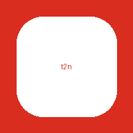

Local alternative: tube2note serve on your machine. See BACKEND.md for backend setup.

tube2note webStatic page (GitHub Pages) + free backend. No keys here.
Local alternative: tube2note serve on your machine. See BACKEND.md for backend setup.